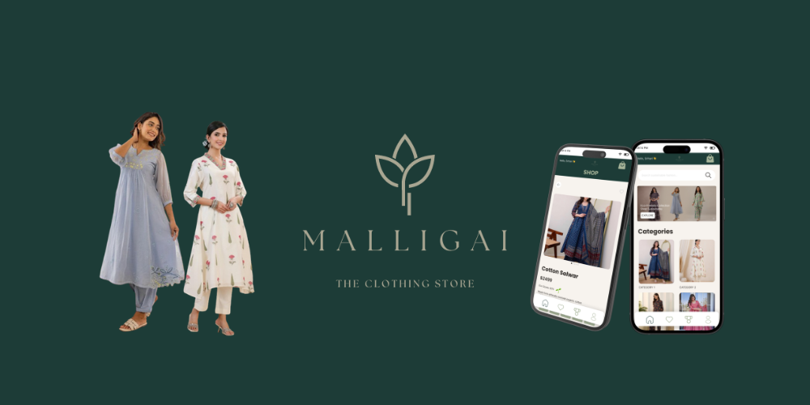
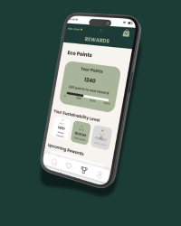
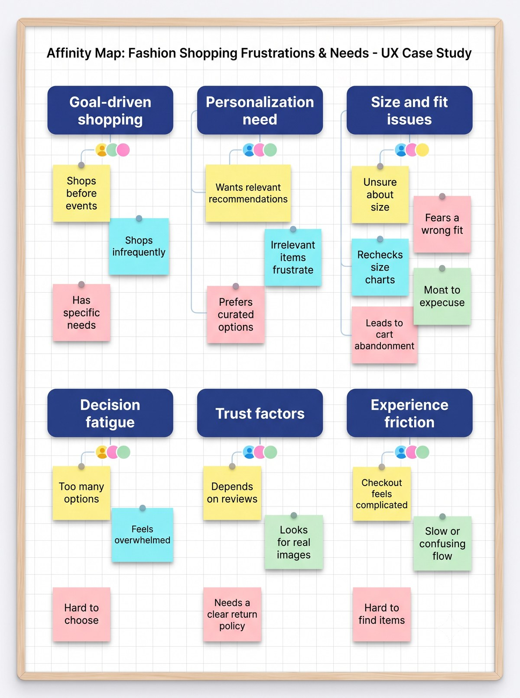
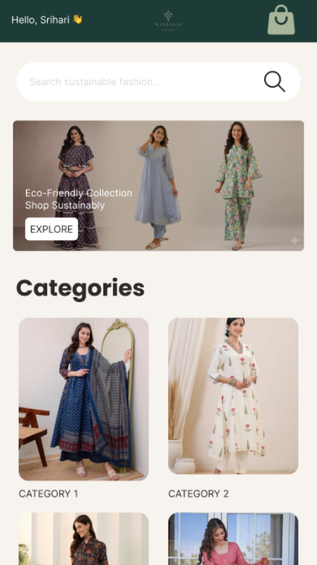
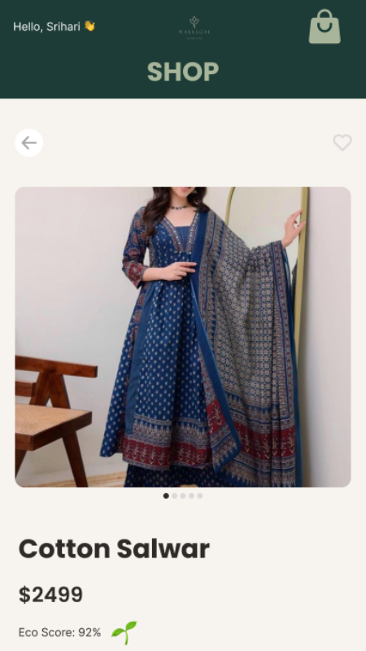
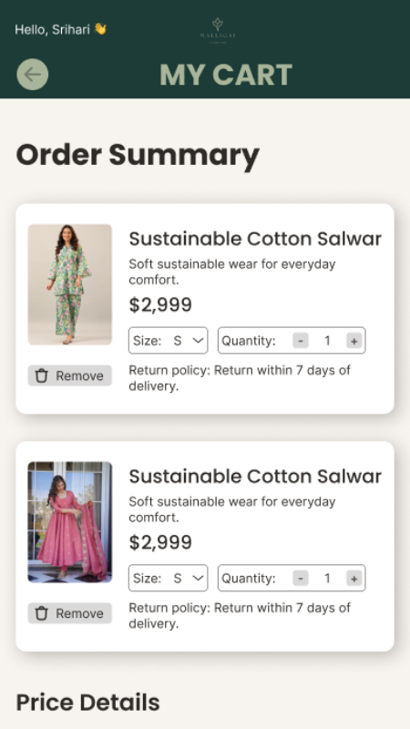
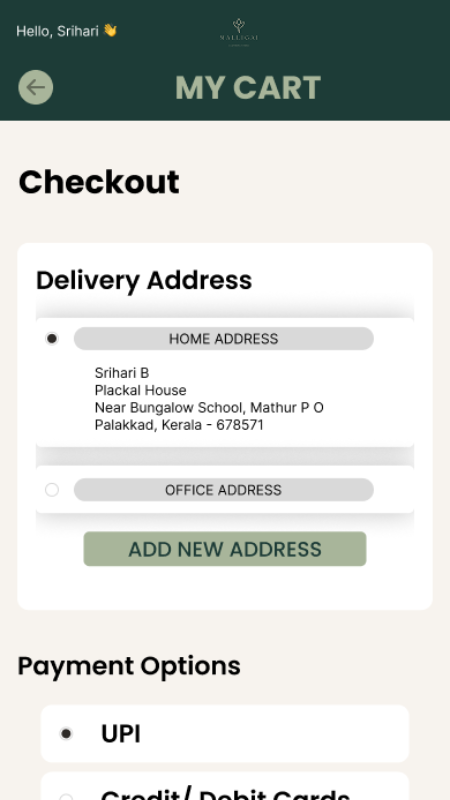
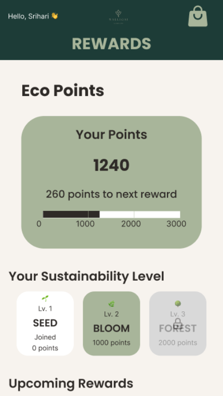
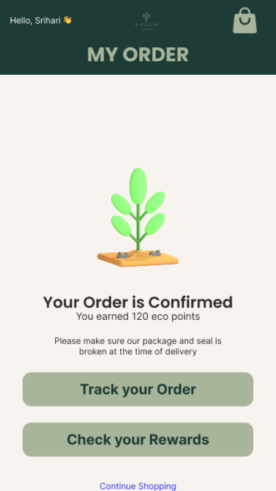

Malligai is a mobile marketplace for sustainable South Indian fashion — salwar suits, kurtas, and ethnic wear crafted from organic, ethically sourced cotton. The design pairs a warm, trust-building palette with quantified sustainability signals — Eco Score, Eco Points, and water-saved counters — so "sustainable" becomes a number you can see, not just a claim on a label.

Sustainable fashion apps tend to lean on messaging — words like "eco-friendly" that ask for trust without earning it. Malligai's brand needed to represent a South Indian craft culture and build genuine calm, personal trust with shoppers, so the design surfaces sustainability as data: an Eco Score on every product, an Eco Points balance that grows with every purchase, and a running tally of water saved and trees planted.

Green branding is easy. Proving the green claim, inside a checkout flow that still has to feel effortless, is the harder design problem.

Before any wireframe, I mapped how people actually evaluate a sustainable fashion purchase — what earns trust, what feels like greenwashing, and where existing eco-commerce apps fall back on vague messaging instead of evidence.
Rather than one linear path, Malligai's IA supports five distinct flows — because a shopper deciding on a single item and a shopper checking their Eco Points balance are doing fundamentally different things.
Green carries the brand's South Indian identity and its sustainability promise — it reads as calm, and it builds a personal, trustworthy feel. The palette went through a real revision: an early warmer, lighter exploration was deepened for the final handoff, giving headers and CTAs stronger contrast and more authority.

A personalised greeting, hero banner, category grid, and trending products sit above an Eco Points teaser — the loyalty mechanic is visible from the very first screen, not buried in a settings menu.

An Eco Score badge sits directly beside the price and description — the same decision point where a shopper is weighing cost against value, sustainability included.

A price breakdown separates the Eco Discount from delivery charges, and a sustainability banner confirms water saved — the impact is quantified before the shopper even reaches checkout.

Delivery address and payment method (UPI pre-selected) are separated into their own cards above the price summary — the exact structure later put under a microscope in usability testing.

A three-tier progress system turns Eco Points into a visible journey, paired with a real impact table — trees planted, water saved, carbon reduced — tying gamification back to an actual outcome.

A deliberate exception to the system — the bottom nav is hidden here, keeping full focus on the confirmation and the Eco Points just earned, with no back navigation once an order is placed.
Hero banners auto-scroll every 3 seconds, the wishlist heart fills with a 150ms spring, and the Eco Points progress bar animates in over 600ms on load — small, considered motion rather than decoration.
I ran a moderated study with 12 participants through Maze, focused on the address, payment, and price breakdown steps — the flow most likely to determine whether a shopper who trusted the Eco Score actually completed the purchase.
| Area | Before | After |
|---|---|---|
| Address selection | Radio buttons sized to the label text, positioned close to the "Add New Address" button | Enlarged tap targets with clear spacing from adjacent actions |
| Size dropdown | Compact inline control on the cart card, easy to misfire while adjusting quantity | Widened target and separated visually from the quantity stepper |
| Payment options | UPI pre-selected with no visible state change on tap confirmation | Clearer selected-state styling on each payment card |
| Price breakdown | Eco Discount shown in the same colour as Subtotal and Delivery | Eco Discount visually differentiated to reinforce the sustainable-purchase benefit |